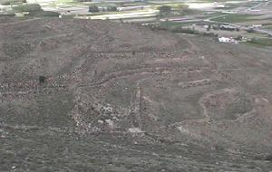

|
EL POYO DEL CID
El yacimiento se extiende por la cumbre y las ladera del cerro de San Esteban, con una superficie aproximada de 10 hectáreas. Lamentablemente apenas se han realizado sobre él pequeñas catas y sondeos para averiguar su estructura y cronología. Al parecer la denominación Poyo procede del latín podium. En El Poyo del Cid se localiza el yacimiento arqueológico de origen celtíbero que perduró hasta la época de los emperadores romanos Nerón y Claudio. Algunos autores lo identifican con la ciudad imperial de Leonica. |
| En 1921 Ramón Menéndez Pidal indicaba su existencia y los expolios que debió de sufrir en décadas anteriores, pero es en 1957 cuando Purificación Atrián llevó a cabo la primera prospección arqueológica importante, continuada entre 1976 y 1978 por Francisco Burillo. Actualmente pueden contemplarse en este yacimiento, el recorrido de unos 1.450 metros de muralla, de un metro de altura y cuatro de grosor algo irregular, ocho torreones externos de planta cuadrangular y uno interno. En las inmediaciones ha aparecido gran cantidad de cerámica celtíbera y romana, así como restos óseos, metálicos y un buen número de monedas. |
 |